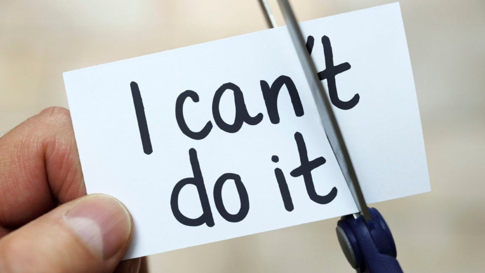

Motivatie
Mijn naam is Yusuf, en ik denk dat ik geschikt ben om te werken bij
Microsoft, omdat ik snel dingen oppak en ervaring hebt met HTML/CSS en
grid. Ik kan ook lang geconcentreerd werken en samenwerken. Ik denk
dat ik bij Microsoft pas omdat ik een harde werker ben, ik genoeg
ervaring heb met programmeertalen dat ik hier kan komen werken en ik
goed ben met samenwerken. Ik vind de dingen die ze uitvinden heel erg
cool. Er is tegenwoordig veel vraag naar software developers en met
mijn skills denk ik dus goede aansluiting te zijn bij dit bedrijf om
te werken aan hun coole producten. Microsoft is een van de grootste
Tech bedrijven in de wereld. Zo een groot bedrijf heeft veel ervaring
in veel meerdere secties in bijvoorbeeld dingen zoals apps, games en
een OS maken. Ik weet nog niet of ik games of sites wil maken dus is
het een goed bedrijf om bij te werken. Ik weet nog niet precies of ik
hbo wil doen of na mijn studie wil werken. Ik hoop dat ik dat tijdens
mijn tweede jaar of stage weet. Hoogstwaarschijnlijk hbo zodat ik mijn
kennis over programmeren nog meer kan uitbreiden en bij een
hoogbetaalde bedrijf te kunnen werken. Ik zie mijzelf wel later
werken voor bedrijven zoals Google of Microsoft, omdat ik weet dat ik
heel hard ga werken en slim genoeg ben om daar aangenomen te worden.
Ik hoop dat ik veel werkervaring uit mijn stage haal zodat ik weet hoe
het in de echte wereld werkt en hoe ik daar mee om kan gaan. Ik werk in
mijn vrije tijd bij de jumbo en dat is ook het enige bijbaantje die ik
heb. Ik sport ook af en toe en game ook veel in mijn vrije tijd.
